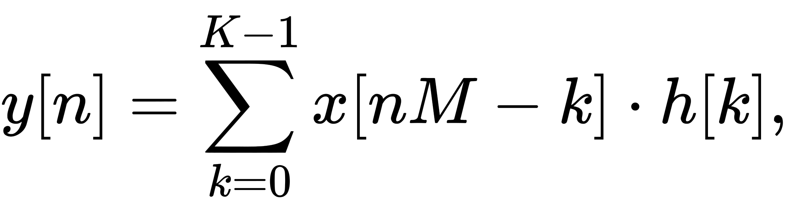
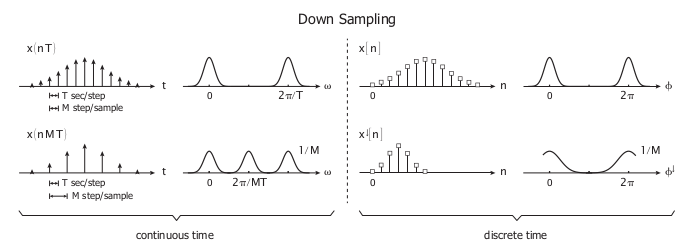

Down sample
Decimation is a term that historically means the removal of every tenth one. But in signal processing, decimation by a factor of 10 actually means keeping only every tenth sample. This factor multiplies the sampling interval or, equivalently, divides the sampling rate. For example, if compact disc audio at 44,100 samples/second is decimated by a factor of 5/4, the resulting sample rate is 35,280. A system component that performs decimation is called a decimator. Decimation by an integer factor is also called compression.
Down sampling can be done in two ways.one is downsampling by an integer factor other one is downsampling by an rational factor
Downsampling by an integer factorRate reduction by an integer factor M can be explained as a two-step process, with an equivalent implementation that is more efficient
Step 2 alone allows high-frequency signal components to be misinterpreted by subsequent users of the data, which is a form of distortion called aliasing. Step 1, when necessary, suppresses aliasing to an acceptable level. In this application, the filter is called an anti-aliasing filter, and its design is discussed below. Also see undersampling for information about decimating bandpass functions and signals. When the anti-aliasing filter is an IIR design, it relies on feedback from output to input, prior to the second step. With FIR filtering, it is an easy matter to compute only every Mth output. The calculation performed by a decimating FIR filter for the nth output sample is a dot product.
where the h[k] sequence is the impulse response, and K is its length. x[n] represents the input sequence being downsampled. In a general purpose processor, after computing y[n], the easiest way to compute y[n+1] is to advance the starting index in the x[n] array by M, and recompute the dot product. In the case M=2, h[k] can be designed as a half-band filter, where almost half of the coefficients are zero and need not be included in the dot products.
By a rational factorLet M/L denote the decimation factor,where: M, L ∈ Z,M > L
1.Increase (resample) the sequence by a factor of L. This is called Upsampling, or interpolation.
2.Decimate by a factor of M.
Step 1 requires a lowpass filter after increasing (expanding) the data rate, and step 2 requires a lowpass filter before decimation. Therefore, both operations can be accomplished by a single filter with the lower of the two cutoff frequencies. For the M > L case, the anti-aliasing filter cutoff, cycles per intermediate sample, is the lower frequency
let us see the example of discrete and continous time signal before and after downsampling.The below figure shows the continous time signal on left side and discrete time signal on right side with a down sampling of M.
